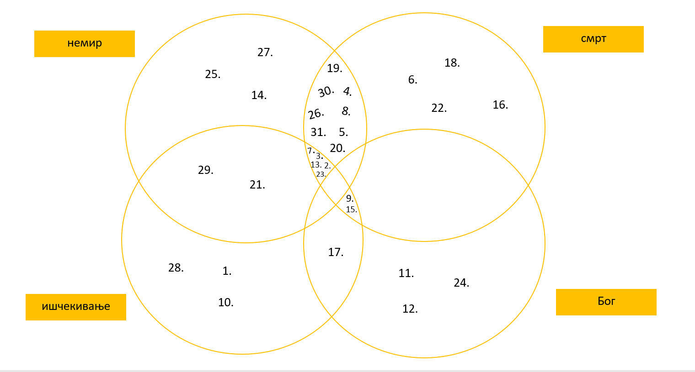

Садржај
Анализа
Овај роман није класични роман. Немамо спеицифичну радњу која прати главног лика или више ликова него имамо много приповедака. И у свакој приповеци имамо ликове, али уопште немамо њихове особине које бисмо могли да анализирамо. Они нису толико важни, важна је поука приче која се
дешава са њима или око њих. С обзиром да је роман сачињен из тридесет једне приповетке где опет немамо конкретне ликове нити баш одређену радњу, ми смо се одлучиле да овај роман анализирамо уз помоћ Веновог дијаграма
Уочиле смо да највише приповедака говори о смрћу, ишћекивању, немиру и Богу. Управо према томе смо и направиле Венов дијграм. Постојало је још додатних пар категорија попут ноћне море или чак нисмо биле сигурне
где бисмо требале да разврстамо неке приповетке. Наравно ово је наше мишљење и не морате да се сложите са њим.
Венов дијаграм

- Седам гласника
- Напад на Велику поворку
- Седам спратова
- Ипак куцају на врата
- Огртач
- Нешто што почиње на Л
- Капљица
- Крај света
- Сувишни позиви
- Божићна прича
- Пас који је видео Бога
- Ратна песма
- Нешто што се десило
- Мишеви
- Тањир се спустио
- Болесни тиранин
- Свеци
- Бубашваба
- Зечеви на месечини
- Болничка питања
- Ходних великог хотела
- Сећање на песника
- Колумбар
- Понизност
- Строго поверљиво господину директору
- Грбе у врту
- Јаје
- Зачарани сако
- Ајфелофа кула
- Девојка која пропада
- Два возача
Наша мишљења
- Ларино мишљење
- Оно што бих истакла код овог романа је управо то што је другачији од осталих. То што немамо главног лика којег пратимо кроз цео роман, већ имамо кратке приповетке неке које имају страницу неке пет страница. На тако кратко страница писац је успео да каже све што је хтео на изванредан начин,
притом лакше је концентрисати се на читање. Роман је пун метафора и алегорија и кад год бих прочитала једну приповетку никад нисам сигурна да ли сам је схватила. Мислим да у већини случајева јесам, али не постоји тачан одговор. Свако може
да схвати на другачији начин и мислим да је то најлепши део овог романа. Моја омиљена приповетка је "Колумбар". Књигу препоручујем, мислим да чак и они који нису толики љубитељи читања да би уживали у овој књизи.
- Ланино мишљење
- Од почетка, па до самог краја, приповетке су ми држале пажњу својим не само радњама већ и једноставним, али слојевитим стилом писања. Морам признати да сам се бојала да нећу разумети већину приповедака, али на самом крају читања увидела сам све слојеве и генијалности писца. Убедљиво најупечатљивија карактеристика целе збирке је да никад не могу да предвидим шта ће се следеће десити, а то је управо оно и што ми је држало пажњу све време. Осим непредвидивости, ту су и поуке, некад тешке, некад болне.
Ако бих бирала омиљену приповетку, то би била "Пас који је видео Бога", не толико непредвидивости, већ због самог утиска који је пас оставио на људе у причи.
Почетак странице